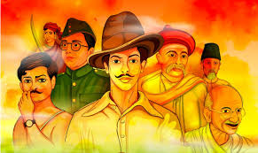
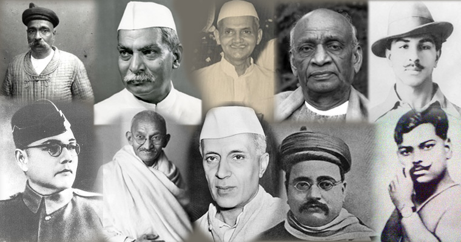
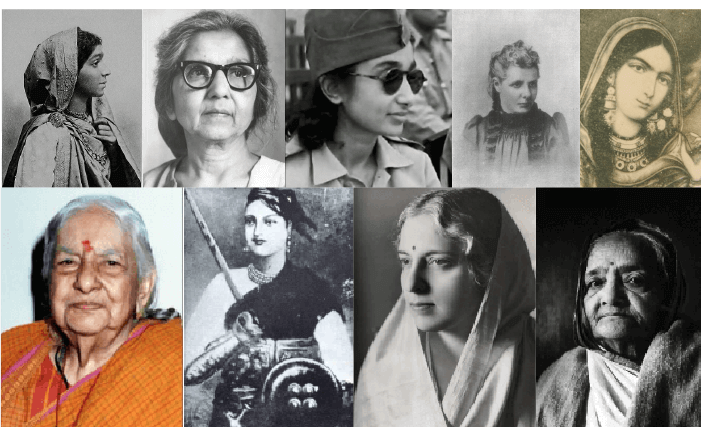

<!DOCTYPE html>
<html>
<head> 
  <link rel="stylesheet" href="body.css"
<title></title>
<style>

h1 {text-align: center;}
</style>

</head>
</html>


<body style="background-color:DodgerBlue;">

  <h1>INTRODUCTION</h1>

  
  
  


<p>India, the largest democratic nation in the world got independence from foreign rule in 1947. It was a 
    momentous year in the history of India when it gained freedom from the British rule that lasted for about 
    100 years. In 1857, the powers of British East India Company was transferred to the British Crown but the 
    Company which was started as early as in 1600 to build colonisation and trade which gradually imposed its 
    rule in many parts of the country, both economically and politically. Prior to that many parts of India 
    were under the control of the Portuguese, French and the Dutch. As the Indian subcontinent had no political 
    unity or unifying force since ancient times, many have come and controlled parts of the country. Prominent 
    and long lasting among them were the Mughals, who ruled most parts of the present country from the 16th 
    century through 18th century.
</p>
<p>The freedom of India is result of long and consistent struggle in many parts of the country in different forms. 
    It was neither easy for the country to fight and expel foreign rulers from the country nor easy to unify different 
    princely states, tribes, people of different languages and cultures in to the idea of one nation. Many people have 
    played significant roles in raising the national movement. Struggles lasted for decades, which finally resulted in 
    independence of the country.</p>
<p>Today we are going to see about few freedom fighters who sacrificed their lives.They are:</p>
<ol>
    <li>Bhagat Singh</li>
    <li>Subhash Chandra Bose</li>
    <li>Alluri Seetha Ramaraju</li>
    <li>Jhansi Lakshmi Bai</li>
  </ol> 

<a href="Bhagatsingh.html"><button class="btn" style="float:right">Next</button></a> <br>
</body>
</html>
